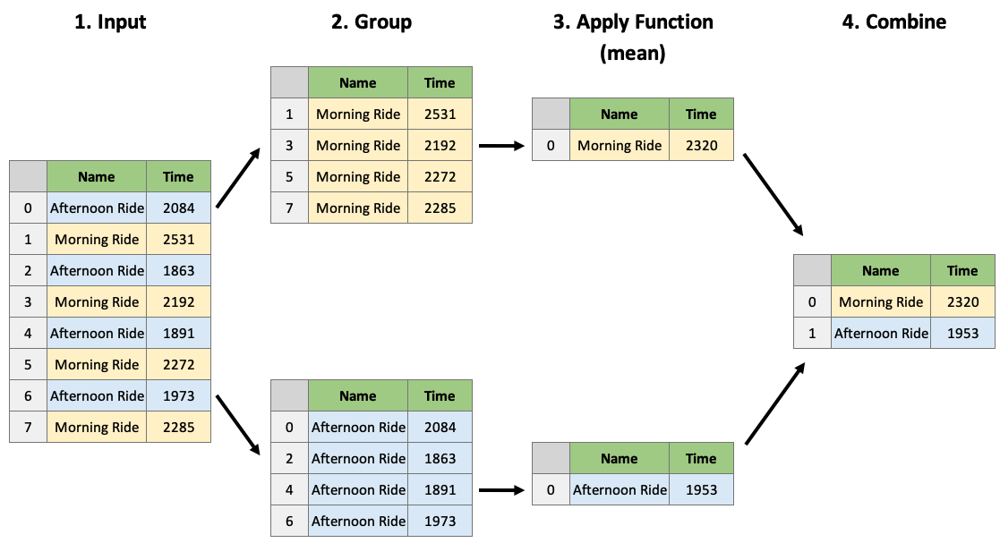

Tutorial 3: Introduction to Data Analysis
Contents
Tutorial 3: Introduction to Data Analysis#
In this tutorial you will further learn on how to use Pandas, one of the most important python packages to be used within data sciences.
Important before we start#
Make sure that you save this file before you continue, else you will lose everything. To do so, go to Bestand/File and click on Een kopie opslaan in Drive/Save a Copy on Drive!
Now, rename the file into Week1_Tutorial3.ipynb. You can do so by clicking on the name in the top of this screen.
Learning Objectives#
Inspect a dataframe with
df.head(),df.tail(),df.info(),df.describe().Obtain dataframe summaries with
df.info()anddf.describe().Manipulate how a dataframe displays in Jupyter by modifying Pandas configuration options such as
pd.set_option("display.max_rows", n).Rename columns of a dataframe using the
df.rename()function or by accessing thedf.columnsattribute.Modify the index name and index values of a dataframe using
.set_index(),.reset_index(),df.index.name,.index.Use
df.melt()anddf.pivot()to reshape dataframes, specifically to make tidy dataframes.Combine dataframes using
df.merge()andpd.concat()and know when to use these different methods.Apply functions to a dataframe
df.apply()anddf.applymap()Perform grouping and aggregating operations using
df.groupby()anddf.agg().Perform aggregating methods on grouped or ungrouped objects such as finding the minimum, maximum and sum of values in a dataframe using
df.agg().Remove or fill missing values in a dataframe with
df.dropna()anddf.fillna().
Tutorial Outline
Importing packages#
Let’s start with importing the two packages that we will use in this Tutorial.
NumPy stands for “Numerical Python” and it is the standard Python library used for working with arrays (i.e., vectors & matrices), linear algerba, and other numerical computations. NumPy is written in C, making NumPy arrays faster and more memory efficient than Python lists or arrays
Pandas is most popular Python library for tabular data structures. You can think of Pandas as an extremely powerful version of Excel (but free and with a lot more features!)
import numpy as np
import pandas as pd
1. DataFrame Characteristics#
Last chapter we looked at how we can create dataframes. Let’s now look at some helpful ways we can view our dataframe.
Head/Tail#
The .head() and .tail() methods allow you to view the top/bottom n (default 5) rows of a dataframe. Let’s load in the cycling data set from last chapter and try them out:
df = pd.read_csv('https://github.com/ElcoK/BigData_AED/raw/main/week1/cycling_data.csv')
df.head()
The default return value is 5 rows, but we can pass in any number we like. For example, let’s take a look at the top 10 rows:
df.head(10)
Or the bottom 5 rows:
df.tail()
DataFrame Summaries#
Three very helpful attributes/functions for getting high-level summaries of your dataframe are:
.shape.info().describe()
.shape is just like the ndarray attribute we’ve seen previously. It gives the shape (rows, cols) of your dataframe:
df.shape
.info() prints information about the dataframe itself, such as dtypes, memory usages, non-null values, etc:
df.info()
.describe() provides summary statistics of the values within a dataframe:
df.describe()
By default, .describe() only print summaries of numeric features. We can force it to give summaries on all features using the argument include='all' (although they may not make sense!):
df.describe(include='all')
Displaying DataFrames#
Displaying your dataframes effectively can be an important part of your workflow. If a dataframe has more than 60 rows, Pandas will only display the first 5 and last 5 rows:
pd.DataFrame(np.random.rand(100))
For dataframes of less than 60 rows, Pandas will print the whole dataframe:
df
I find the 60 row threshold to be a little too much, I prefer something more like 20. You can change the setting using pd.set_option("display.max_rows", 20) so that anything with more than 20 rows will be summarised by the first and last 5 rows as before:
pd.set_option("display.max_rows", 20)
df
There are also other display options you can change, such as how many columns are shown, how numbers are formatted, etc. See the official documentation for more.
One display option I will point out is that Pandas allows you to style your tables, for example by highlighting negative values, or adding conditional colour maps to your dataframe. Below I’ll style values based on their value ranging from negative (purple) to postive (yellow) but you can see the styling documentation for more examples.
test = pd.DataFrame(np.random.randn(5, 5),
index = [f"row_{_}" for _ in range(5)],
columns = [f"feature_{_}" for _ in range(5)])
test.style.background_gradient(cmap='plasma')
Views vs Copies#
In previous chapters we’ve discussed views (“looking” at a part of an existing object) and copies (making a new copy of the object in memory). These things get a little abstract with Pandas and “…it’s very hard to predict whether it will return a view or a copy” (that’s a quote straight from a dedicated section in the Pandas documentation).
Basically, it depends on the operation you are trying to perform, your dataframe’s structure and the memory layout of the underlying array. But don’t worry, let me tell you all you need to know. Firstly, the most common warning you’ll encounter in Pandas is the SettingWithCopy, Pandas raises it as a warning that you might not be doing what you think you’re doing. Let’s see an example. You may recall there is one outlier Time in our dataframe:
df[df['Time'] > 4000]
Imagine we wanted to change this to 2000. You’d probably do the following:
df[df['Time'] > 4000]['Time'] = 2000
Ah, there’s that warning. Did our dataframe get changed?
df[df['Time'] > 4000]
No it didn’t, even though you probably thought it did. What happened above is that df[df['Time'] > 4000] was executed first and returned a copy of the dataframe, we can confirm by using id():
print(f"The id of the original dataframe is: {id(df)}")
print(f" The id of the indexed dataframe is: {id(df[df['Time'] > 4000])}")
We then tried to set a value on this new object by appending ['Time'] = 2000. Pandas is warning us that we are doing that operation on a copy of the original dataframe, which is probably not what we want. To fix this, you need to index in a single go, using .loc[] for example:
df.loc[df['Time'] > 4000, 'Time'] = 2000
No error this time! And let’s confirm the change:
df[df['Time'] > 4000]
The second thing you need to know is that if you’re ever in doubt about whether something is a view or a copy, you can just use the .copy() method to force a copy of a dataframe. Just like this:
df2 = df[df['Time'] > 4000].copy()
That way, your guaranteed a copy that you can modify as you wish.
2. Basic DataFrame Manipulations#
Renaming Columns#
We can rename columns two ways:
Using
.rename()(to selectively change column names)By setting the
.columnsattribute (to change all column names at once)
df
Let’s give it a go:
df.rename(columns={"Date": "Datetime",
"Comments": "Notes"})
df
Wait? What happened? Nothing changed? In the code above we did actually rename columns of our dataframe but we didn’t modify the dataframe inplace, we made a copy of it. There are generally two options for making permanent dataframe changes:
Use the argument
inplace=True, e.g.,df.rename(..., inplace=True), available in most functions/methods
Re-assign, e.g.,
df = df.rename(...)The Pandas team recommends Method 2 (re-assign), for a few reasons (mostly to do with how memory is allocated under the hood).
df = df.rename(columns={"Date": "Datetime",
"Comments": "Notes"})
df
If you wish to change all of the columns of a dataframe, you can do so by setting the .columns attribute:
df.columns = [f"Column {_}" for _ in range(1, 7)]
df
Changing the Index#
You can change the index labels of a dataframe in 3 main ways:
.set_index()to make one of the columns of the dataframe the indexDirectly modify
df.index.nameto change the index name.reset_index()to move the current index as a column and to reset the index with integer labels starting from 0Directly modify the
.index()attribute
df
Below I will set the index as Column 1 and rename the index to “New Index”:
df = df.set_index("Column 1")
df.index.name = "New Index"
df
I can send the index back to a column and have a default integer index using .reset_index():
df = df.reset_index()
df
Like with column names, we can also modify the index directly, but I can’t remember ever doing this, usually I’ll use .set_index():
df.index
df.index = range(100, 133, 1)
df
Adding/Removing Columns#
There are two main ways to add/remove columns of a dataframe:
Use
[]to add columnsUse
.drop()to drop columns
Let’s re-read in a fresh copy of the cycling dataset.
df = pd.read_csv('https://raw.githubusercontent.com/ElcoK/BigData_AED/main/week1/cycling_data.csv')
df
We can add a new column to a dataframe by simply using [] with a new column name and value(s):
df['Rider'] = 'Tom Beuzen'
df['Avg Speed'] = df['Distance'] * 1000 / df['Time'] # avg. speed in m/s
df
df = df.drop(columns=['Rider', 'Avg Speed'])
df
Adding/Removing Rows#
You won’t often be adding rows to a dataframe manually (you’ll usually add rows through concatenating/joining - that’s coming up next). You can add/remove rows of a dataframe in two ways:
Use
.append()to add rowsUse
.drop()to drop rows
df
Let’s add a new row to the bottom of this dataframe:
another_row = pd.DataFrame([["12 Oct 2019, 00:10:57", "Morning Ride", "Ride",
2331, 12.67, "Washed and oiled bike last night"]],
columns = df.columns,
index = [33])
df = df.append(another_row)
df
We can drop all rows above index 30 using .drop():
df.drop(index=range(30, 34))
3. DataFrame Reshaping#
Tidy data is about “linking the structure of a dataset with its semantics (its meaning)”. It is defined by:
Each variable forms a column
Each observation forms a row
Each type of observational unit forms a table
Often you’ll need to reshape a dataframe to make it tidy (or for some other purpose).

Source: r4ds
Melt and Pivot#
Pandas .melt(), .pivot() and .pivot_table() can help reshape dataframes
.melt(): make wide data long..pivot(): make long data width..pivot_table(): same as.pivot()but can handle multiple indexes.

Source: Garrick Aden-Buie’s GitHub
The below data shows how many courses different instructors taught across different years. If the question you want to answer is something like: “Does the number of courses taught vary depending on year?” then the below would probably not be considered tidy because there are multiple observations of courses taught in a year per row (i.e., there is data for 2018, 2019 and 2020 in a single row):
df = pd.DataFrame({"Name": ["Tom", "Mike", "Tiffany", "Varada", "Joel"],
"2018": [1, 3, 4, 5, 3],
"2019": [2, 4, 3, 2, 1],
"2020": [5, 2, 4, 4, 3]})
df
Let’s make it tidy with .melt(). .melt() takes a few arguments, most important is the id_vars which indicated which column should be the “identifier”.
df_melt = df.melt(id_vars="Name",
var_name="Year",
value_name="Courses")
df_melt
The value_vars argument allows us to select which specific variables we want to “melt” (if you don’t specify value_vars, all non-identifier columns will be used). For example, below I’m omitting the 2018 column:
df.melt(id_vars="Name",
value_vars=["2019", "2020"],
var_name="Year",
value_name="Courses")
Sometimes, you want to make long data wide, which we can do with .pivot(). When using .pivot() we need to specify the index to pivot on, and the columns that will be used to make the new columns of the wider dataframe:
df_pivot = df_melt.pivot(index="Name",
columns="Year",
values="Courses")
df_pivot
You’ll notice that Pandas set our specified index as the index of the new dataframe and preserved the label of the columns. We can easily remove these names and reset the index to make our dataframe look like it originally did:
df_pivot = df_pivot.reset_index()
df_pivot.columns.name = None
df_pivot
.pivot() will often get you what you want, but it won’t work if you want to:
Use multiple indexes (next chapter), or
Have duplicate index/column labels
In these cases you’ll have to use .pivot_table(). I won’t focus on it too much here because I’d rather you learn about pivot() first.
df = pd.DataFrame({"Name": ["Tom", "Tom", "Mike", "Mike"],
"Department": ["CS", "STATS", "CS", "STATS"],
"2018": [1, 2, 3, 1],
"2019": [2, 3, 4, 2],
"2020": [5, 1, 2, 2]}).melt(id_vars=["Name", "Department"], var_name="Year", value_name="Courses")
df
In the above case, we have duplicates in Name, so pivot() won’t work. It will throw us a ValueError: Index contains duplicate entries, cannot reshape:
df.pivot(index="Name",
columns="Year",
values="Courses")
In such a case, we’d use .pivot_table(). It will apply an aggregation function to our duplicates, in this case, we’ll sum() them up:
df.pivot_table(index="Name", columns='Year', values='Courses', aggfunc='sum')
If we wanted to keep the numbers per department, we could specify both Name and Department as multiple indexes:
df.pivot_table(index=["Name", "Department"], columns='Year', values='Courses')
The result above is a mutlti-index or “hierarchically indexed” dataframe (more on those next chapter). If you ever have a need to use it, you can read more about pivot_table() in the documentation.
4. Working with Multiple DataFrames#
Often you’ll work with multiple dataframes that you want to stick together or merge. df.merge() and df.concat() are all you need to know for combining dataframes. The Pandas documentation is very helpful for these functions, but they are pretty easy to grasp.
Sticking DataFrames Together with pd.concat()#
You can use pd.concat() to stick dataframes together:
Vertically: if they have the same columns, OR
Horizontally: if they have the same rows
df1 = pd.DataFrame({'A': [1, 3, 5],
'B': [2, 4, 6]})
df2 = pd.DataFrame({'A': [7, 9, 11],
'B': [8, 10, 12]})
df1
df2
pd.concat((df1, df2), axis=0) # axis=0 specifies a vertical stick, i.e., on the columns
Notice that the indexes were simply joined together? This may or may not be what you want. To reset the index, you can specify the argument ignore_index=True:
pd.concat((df1, df2), axis=0, ignore_index=True)
Use axis=1 to stick together horizontally:
pd.concat((df1, df2), axis=1, ignore_index=True)
You are not limited to just two dataframes, you can concatenate as many as you want:
pd.concat((df1, df2, df1, df2), axis=0, ignore_index=True)
Joining DataFrames with pd.merge()#
pd.merge() gives you the ability to “join” dataframes using different rules (just like with SQL if you’re familiar with it). You can use df.merge() to join dataframes based on shared key columns. Methods include:
“inner join”
“outer join”
“left join”
“right join”
See this great cheat sheet and these great animations for more insights.
df1 = pd.DataFrame({"name": ['Magneto', 'Storm', 'Mystique', 'Batman', 'Joker', 'Catwoman', 'Hellboy'],
'alignment': ['bad', 'good', 'bad', 'good', 'bad', 'bad', 'good'],
'gender': ['male', 'female', 'female', 'male', 'male', 'female', 'male'],
'publisher': ['Marvel', 'Marvel', 'Marvel', 'DC', 'DC', 'DC', 'Dark Horse Comics']})
df2 = pd.DataFrame({'publisher': ['DC', 'Marvel', 'Image'],
'year_founded': [1934, 1939, 1992]})

An “inner” join will return all rows of df1 where matching values for “publisher” are found in df2:
pd.merge(df1, df2, how="inner", on="publisher")

An “outer” join will return all rows of df1 and df2, placing NaNs where information is unavailable:
pd.merge(df1, df2, how="outer", on="publisher")
Return all rows from df1 and all columns of df1 and df2, populated where matches occur:
pd.merge(df1, df2, how="left", on="publisher")

pd.merge(df1, df2, how="right", on="publisher")
There are many ways to specify the key to join dataframes on, you can join on index values, different, column names, etc. Another helpful argument is the indicator argument which will add a column to the result telling you where matches were found in the dataframes:
pd.merge(df1, df2, how="outer", on="publisher", indicator=True)
By the way, you can use pd.concat() to do a simple “inner” or “outer” join on multiple datadrames at once. It’s less flexible than merge, but can be useful sometimes.
5. More DataFrame Operations#
Applying Custom Functions#
There will be times when you want to apply a function that is not built-in to Pandas. For this, we also have methods:
df.apply(), applies a function column-wise or row-wise across a dataframe (the function must be able to accept/return an array)df.applymap(), applies a function element-wise (for functions that accept/return single values at a time)series.apply()/series.map(), same as above but for Pandas series
For example, say you want to use a numpy function on a column in your dataframe:
df = pd.read_csv('https://raw.githubusercontent.com/ElcoK/BigData_AED/main/week1/cycling_data.csv')
df[['Time', 'Distance']].apply(np.sin)
Or you may want to apply your own custom function:
def seconds_to_hours(x):
return x / 3600
df[['Time']].apply(seconds_to_hours)
This may have been better as a lambda function…
df[['Time']].apply(lambda x: x / 3600)
You can even use functions that require additional arguments. Just specify the arguments in .apply():
def convert_seconds(x, to="hours"):
if to == "hours":
return x / 3600
elif to == "minutes":
return x / 60
df[['Time']].apply(convert_seconds, to="minutes")
Some functions only accept/return a scalar:
int(3.141)
float([3.141, 10.345])
For these, we need .applymap():
df[['Time']].applymap(int)
However, there are often “vectorized” versions of common functions like this already available, which are much faster. In the case above, we can use .astype() to change the dtype of a whole column quickly:
time_applymap = %timeit -q -o -r 3 df[['Time']].applymap(float)
time_builtin = %timeit -q -o -r 3 df[['Time']].astype(float)
print(f"'astype' is {time_applymap.average / time_builtin.average:.2f} faster than 'applymap'!")
Grouping#
Often we are interested in examining specific groups in our data. df.groupby() allows us to group our data based on a variable(s).
df = pd.read_csv('https://raw.githubusercontent.com/ElcoK/BigData_AED/main/week1/cycling_data.csv')
df
Let’s group this dataframe on the column Name:
dfg = df.groupby(by='Name')
dfg
What is a DataFrameGroupBy object? It contains information about the groups of the dataframe:
The groupby object is really just a dictionary of index-mappings, which we could look at if we wanted to:
dfg.groups
We can also access a group using the .get_group() method:
dfg.get_group('Afternoon Ride')
The usual thing to do however, is to apply aggregate functions to the groupby object:
dfg.mean()
We can apply multiple functions using .aggregate():
dfg.aggregate(['mean', 'sum', 'count'])
And even apply different functions to different columns:
def num_range(x):
return x.max() - x.min()
dfg.aggregate({"Time": ['max', 'min', 'mean', num_range],
"Distance": ['sum']})
By the way, you can use aggregate for non-grouped dataframes too. This is pretty much what df.describe does under-the-hood:
df.agg(['mean', 'min', 'count', num_range])
Dealing with Missing Values#
Missing values are typically denoted with NaN. We can use df.isnull() to find missing values in a dataframe. It returns a boolean for each element in the dataframe:
df.isnull()
But it’s usually more helpful to get this information by row or by column using the .any() or .info() method:
df.info()
df[df.isnull().any(axis=1)]
When you have missing values, we usually either drop them or impute them.You can drop missing values with df.dropna():
df.dropna()
Or you can impute (“fill”) them using .fillna(). This method has various options for filling, you can use a fixed value, the mean of the column, the previous non-nan value, etc:
df = pd.DataFrame([[np.nan, 2, np.nan, 0],
[3, 4, np.nan, 1],
[np.nan, np.nan, np.nan, 5],
[np.nan, 3, np.nan, 4]],
columns=list('ABCD'))
df
df.fillna(0) # fill with 0
df.fillna(df.mean()) # fill with the mean
df.fillna(method='bfill') # backward (upwards) fill from non-nan values
df.fillna(method='ffill') # forward (downward) fill from non-nan values